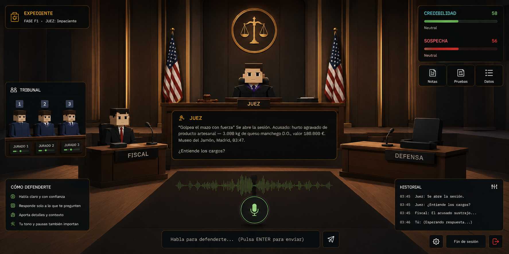

El juego actual tiene un motor de IA impresionante (Nemotron Ultra 550B genera diálogos coherentes en español con personalidades distintas) pero falla en TODO lo demás. La UI tapa el arte 3D, los tiempos no permiten leer, las mecánicas son "Press X to Continue" disfrazadas de juego, y el jugador no entiende qué hacer en ningún momento.
| # | Problema | Quién lo reportó | Impacto |
|---|---|---|---|
| 1 | UI tapa el arte 3D — la burbuja de diálogo ocupa el centro de la pantalla | Usuario | Crítico |
| 2 | Tiempos insuficientes — 20s para leer + pensar + escribir objeción | Usuario + LiveOps | Crítico |
| 3 | Input no envía — el texto se queda en el campo sin procesarse | Usuario | Crítico |
| 4 | Role confusion — el juez responde como acusado | Usuario + Narrative | Crítico |
| 5 | Intro llena de texto — nadie quiere leer 4 paneles antes de jugar | UX/UI Lead | Alto |
| 6 | Sin feedback de progreso — no sabes si vas bien o mal | Player Psychology | Alto |
| 7 | Mecánicas sin skill — protestar es un QTE, no una decisión | Game Design Director | Alto |
| 8 | Sin audio ambiente — silencio total rompe inmersión | Audio Director | Medio |
| 9 | Jerarquía visual plana — todo compite por atención | UX/UI Lead | Medio |
| 10 | Caso estático — sin variabilidad entre partidas | LiveOps | Medio |
Convertir un 3.9/10 (demo técnica con UI de tribunal) en un 8/10 (juego divertido, rejugable, que un streamer quiera jugar en directo). Este documento define EXACTAMENTE cómo, con justificación para cada decisión.
Un juego no es "interactividad". Un juego es decisiones significativas bajo tensión. El juego actual tiene interactividad (botones, micrófono, texto) pero NO tiene decisiones significativas. Protestar es un reflejo, no un pensamiento. Elegir evidencia es un click, no un dilema. El veredicto es una fórmula matemática que ignora lo que dijiste.
Por qué: El jugador necesita VER el tribunal, los personajes, sus reacciones. Si la UI tapa el arte, la inmersión muere. Regla: La UI ocupa máximo 30% de la pantalla. El 70% es tribunal 3D visible.
Cómo: Paneles laterales semi-transparentes, burbuja de diálogo en zona inferior (no central), medidores como iconos pequeños en esquinas.
Por qué: Si no hay costo, no hay tensión. Si no hay recompensa visible, no hay satisfacción. Regla: Cada acción del jugador muestra inmediatamente qué ganó o perdió, con número y explicación.
Cómo: "+8 Credibilidad: El juez reconoce que el acceso compartido debilita la prueba" (no solo "+8 Credibilidad").
Por qué: El timer debe crear urgencia, no pánico. 20s para leer + pensar + escribir es pánico. 30s con 5s de buffer es urgencia. Regla: El jugador SIEMPRE tiene tiempo de leer lo que el NPC dijo antes de tener que actuar.
Cómo: Buffer de 5s después de que el NPC habla. Timer empieza DESPUÉS del buffer, no durante.
Por qué: Si el juez responde como acusado, la fantasía se rompe. Si el jugador no siente que SUS palabras importan, no hay inversión emocional. Regla: Los NPCs NUNCA hablan como el acusado. Lo que el jugador dice cambia la respuesta del NPC.
Cómo: System prompts con "TÚ ERES EL JUEZ/FISCAL/TESTIGO. NUNCA hables como el acusado" en la primera línea.
Por qué: Nadie quiere leer 4 paneles de tutorial antes de jugar. La intro actual es un muro de texto. Regla: El tutorial dura 15 segundos y enseña UNA cosa: "habla o escribe para responder". El resto se aprende en el juego.
Cómo: Onboarding contextual: el juego te dice qué hacer EN EL MOMENTO, no antes.
Cada mecánica explicada con: qué es, por qué divierte, cómo se muestra en UI, y cuál es el skill involucrado.
Qué es: Tienes 3 objeciones en todo el juicio. Cada una que gastas mal te deja más débil para el resto.
Por qué divierte: Hay tensión real. ¿Gasto mi última objeción aquí o la guardo para después? Es como un juego de cartas: cada carta es valiosa. Si fueran infinitas, no importaría cuándo las usas.
Skill involucrado: El jugador debe identificar CUÁL evidencia del fiscal tiene un fallo lógico y CUÁL es el fundamento correcto. No es "protestar todo", es "protestar bien".
Cómo se muestra: Tres iconos de mazo (🔨) en la esquina superior derecha. Los usados se atenúan. Cuando quedan 0, el botón PROTESTO se desactiva con tooltip "Sin objeciones".
Qué es: Los testigos tienen mentiras REALES entre sus testimonios. El guarda dice "no vi a nadie". El supervisor dice "el guarda me avisó que vio a alguien". Uno miente. El jugador debe ESCUCHAR, COMPARAR y SEÑALAR.
Por qué divierte: Es el momento "aha" de Phoenix Wright. Cuando conectas dos piezas y descubres la mentira, te sientes un genio. No es reflejo, es deducción.
Skill involucrado: Escucha activa + memoria + comparación lógica. El jugador debe recordar lo que dijo cada testigo y encontrar la inconsistencia.
Cómo se muestra: Panel izquierdo "📝 TESTIMONIOS" muestra lo que cada testigo dijo (texto resumido). Cuando hay 2+ testimonios, aparece el botón "⚡ CONTRADICCIÓN" en púrpura. El jugador escribe qué notó.
Qué es: Pregúntale al testigo lo que quieras por voz o texto. La IA responde EN PERSONAJE. Si haces la pregunta correcta, el testigo se contradice o admite algo que no quería.
Por qué divierte: Es la mecánica con mayor skill ceiling. Un jugador experto puede destrozar a un testigo en 20 segundos con la pregunta correcta. Un novato puede flirtear con el testigo para que cambie de bando. La IA improvisa, cada partida es única.
Skill involucrado: Pensamiento estratégico + improvisación + empatía (leer al personaje).
Cómo se muestra: El testigo activo tiene un highlight dorado. El jugador escribe o habla libremente. Las respuestas se guardan en el panel de testimonios para comparar después.
Qué es: 4 evidencias disponibles, cada una con tipo visible: EXCULPATORIA AMBIGUA INCRIMINATORIA
Por qué divierte: Hay dilema. ¿Presentas la evidencia ambigua que podría ir en tu contra? ¿O juegas seguro con la exculpatoria? Si no leíste las descripciones, puedes elegir la incriminatoria por error.
Cómo se muestra: 4 botones en la parte inferior (no central). Color codificado: verde, ámbar, rojo. Descripción breve visible SIN necesidad de hover.
Qué es: 90 segundos para convencer al juez. Lo que digas se envía a la IA que ya conoce todo el contexto del juicio. Si usas las contradicciones que descubriste, el juez las cita en el veredicto.
Por qué divierte: Es tu momento. Todo lo que hiciste antes se acumula. Si encontraste la mentira del supervisor, puedes usarla aquí. Si no, llegas desnudo. La IA reacciona a TU argumento, no a un guion.
Cómo se muestra: Timer grande pero no intrusivo (esquina superior). Sin botones de por medio — solo habla o escribe. La burbuja del juez aparece cuando termina con el veredicto.
El loop actual es lineal: F1→F2→F3→F4→F5→Veredicto. El problema: no hay loop, solo una línea recta. Un juego necesita un CICLO donde lo que aprendes en una partida te hace mejor en la siguiente.
| Fase | Duración | Tensión | Por qué |
|---|---|---|---|
| F1 Apertura | 30-60s | 30/100 | El juez lee cargos. Tensión baja, el jugador se ambienta. |
| F2 Fiscal | 2-3 min | 60/100 | El fiscal ataca. Tienes que decidir si objetar (recurso limitado). Tensión sube. |
| F3 Evidencia | 30-60s | 40/100 | Valle estratégico. El jugador elige evidencia. Respira antes de F4. |
| F4 Testigos | 3-4 min | 80/100 | Pico de tensión. Contrainterrogatorio + contradicciones. El jugador está activo. |
| F5 Alegato | 1.5 min | 95/100 | Clímax. Todo lo que descubriste se usa aquí. Una última oportunidad. |
| Veredicto | 10s | 100→0/100 | Caída catártica. Absuelto = alivio. Culpable = tensión que se libera. |
La tensión sube por DECISIONES del jugador (objeta, interroga, señala contradicción), no por timers. El timer es urgencia, no tensión. La tensión viene de "¿gasté mi última objeción bien?".
Cada caso tiene 27 variantes internas (testigo mentiroso, evidencia clave, perfil del juez, vínculo entre testigos). El jugador que juega el mismo caso 3 veces se enfrenta a configuraciones distintas. Esto da rejugabilidad sin escribir 27 casos.
Basado en la captura de referencia del usuario. El arte 3D es el foco. La UI no estorba. Cada elemento tiene un por qué.

La referencia muestra 5 zonas funcionales claras:
Por qué funciona esta jerarquía: El ojo va al centro (tribunal 3D con personajes), luego a la zona inferior (quién está hablando y qué decir), y solo cuando necesita información va a los paneles laterales. La UI es REFERENCIA, no protagonista.
Qué se ve: Escena 3D del tribunal con juez, fiscal, acusado, testigo y jurados. Cámara reactiva que cambia de ángulo según quién habla.
Por qué aquí: Es el foco emocional. El jugador necesita VER las reacciones de los personajes. Si la UI tapa esto, la inmersión muere.
Jerarquía: Primaria. Es lo primero que el ojo busca.
Qué se ve: Burbuja de diálogo con speaker label (icono + nombre) + texto del NPC. Debajo: input de texto SIEMPRE visible con placeholder contextual.
Por qué aquí: El diálogo es la segunda prioridad visual. El ojo baja del tribunal 3D al diálogo naturalmente. El input está justo debajo para que el jugador responda sin mover el ojo.
Por qué NO en el centro: El centro es para el arte. El diálogo en la zona inferior no tapa los personajes. Phoenix Wright pone el diálogo abajo por esta razón.
Jerarquía: Secundaria. Es lo segundo que el ojo busca.
Qué se ve: Credibilidad (verde) + Sospecha (rojo) como barras compactas. Debajo: 3 iconos de mazo (objeciones restantes). Cuando hay window de objeción, el icono de mazo parpadea.
Por qué aquí: Los medidores son información de estado, no foco. Van en la periferia donde el ojo los consulta sin distraerse. La esquina superior derecha es donde la gente busca "stats" por convención de juegos.
Jerarquía: Terciaria. Se consulta, no se mira continuamente.
Qué se ve: "EXPEDIENTE 2026/NOTG-001 · FASE F2 · JUEZ: Impaciente" en una sola línea. Mínimo.
Por qué aquí: Contexto, no foco. El jugador lo mira una vez al empezar y olvida. La esquina superior izquierda es donde la gente busca "dónde estoy" por convención.
Jerarquía: Cuaternaria. Casi invisible.
Qué se ve: Panel púrpura con lo que cada testigo dijo (resumen). Solo aparece en F4 cuando hay testimonios que comparar.
Por qué aquí: Es información de referencia para detectar contradicciones. Va a la izquierda porque es "información del pasado" (lo que ya escuchaste). El jugador la consulta cuando busca contradicciones.
Por qué NO siempre visible: Si siempre está, el jugador no ESCUCHA. Lo lee del panel en vez de prestar atención. Debe aparecer DESPUÉS de que el testigo hable, como "nota mental".
Jerarquía: Contextual. Solo visible cuando aplica.
Qué se ve: Botón "¡PROTESTO!" rojo (solo F2 window) o panel de evidencias (solo F3) o botón "⚡ CONTRADICCIÓN" púrpura (solo F4 con 2+ testimonios).
Por qué aquí: Los botones de acción van CERCA del input, no en el centro. El ojo ya está en la zona inferior (diálogo + input). Los botones aparecen ahí para que la acción sea inmediata.
Por qué NO siempre visible: Si PROTESTO está siempre, el jugador lo spamea. Si CONTRADICCIÓN está siempre, el jugador la usa sin pensar. La aparición contextual crea el momento "¡AHORA puedo actuar!".
Jerarquía: Acción. Aparece cuando el jugador DEBE actuar.
Qué se ve: 5 círculos pequeños (numerados 1-5) con color según simpatía: verde (favorable), ámbar (neutral), rojo (hostil). Un círculo atenuado = recusado.
Por qué aquí: El jurado es información pasiva. El jugador lo consulta para decidir si recusar, pero no lo mira continuamente. La esquina inferior derecha es el lugar menos intrusivo.
Jerarquía: Referencial. Mínima.
Cada icono tiene un propósito. Cada color tiene un significado. Nada es decorativo.
| Color | Hex | Significado | Dónde se usa |
|---|---|---|---|
| ● Dorado | #c69850 | Identidad del juego, autoridad | Juez, marco de diálogo, acentos |
| ● Verde | #5a9e5a | Positivo, credibilidad, favorable | Medidor credibilidad, jurado favorable, feedback positivo |
| ● Rojo | #c44545 | Peligro, sospecha, alerta | Medidor sospecha, botón PROTESTO, jurado hostil, feedback negativo |
| ● Púrpura | #7a5a9e | Deducción, contradicción, misterio | Botón CONTRADICCIÓN, panel de testimonios |
| ● Azul | #5a7a9e | Información, contexto | Historial, tips, información neutral |
| ● Crema | #f0e4cf | Texto principal, fondo de diálogo | Texto, burbuja de diálogo |
| ● Gris | #8a8a8a | Texto secundario, metadatos | Fase, timestamps, captions |
La intro actual es un muro de texto. Nadie la lee. El onboarding debe enseñar jugando, no leyendo.
"NOT GUILTY" en grande sobre fondo oscuro. Un botón: "JUGAR". Nada más.
Por qué: El título genera curiosidad. El botón invita a actuar. No hay texto que leer. El jugador hace click inmediatamente.
Una sola pregunta: "¿Cómo quieres responder?" con dos opciones grandes:
Por qué: Una decisión, no instrucciones. El jugador ELIGE cómo jugar. Esto le da agencia desde el segundo 1. Si elige micrófono y no funciona, el juego le ofrece teclado automáticamente.
Directo al tribunal 3D. El juez habla. Aparece la burbuja de diálogo abajo. El input está listo. El primer hint contextual dice: "Responde al juez. Ej: 'sí'".
Por qué: El jugador aprende que (1) hay un juez que habla, (2) puede responder, (3) la respuesta va al juez. Todo en 5 segundos. Sin leer.
Cada mecánica se enseña EN EL MOMENTO en que se necesita:
| Cuándo | Qué aparece | Qué enseña |
|---|---|---|
| F1: Juez pregunta | "💬 Responde al juez. Ej: 'sí'" | Que puedes responder |
| F2: Fiscal presenta evidencia | Botón rojo "¡PROTESTO! (3)" aparece | Que puedes objetar + tienes 3 |
| F2: Tras primera objeción | Feedback "+8 Cred, -10 Sosp" | Que objetar bien te ayuda |
| F3: Juez pregunta evidencia | 4 botones de evidencia aparecen abajo | Que puedes elegir evidencia |
| F4: Segundo testigo habla | Panel púrpura "📝 TESTIMONIOS" aparece | Que puedes comparar testimonios |
| F4: 2+ testimonios | Botón "⚡ CONTRADICCIÓN" aparece | Que puedes señalar mentiras |
Por qué: El jugador aprende haciendo, no leyendo. Cada mecánica se enseña 5 segundos antes de necesitarla, no 5 minutos antes. Esto es como Portal: te enseña con la mano, no con un manual.
Un juego engancha cuando activa 5 motores psicológicos. El juego actual activa 0. El rediseño activa los 5.
Qué es: El jugador siente que SUS decisiones importan, no que sigue un guion.
Actual: ❌ F1 es "sí/no" sin consecuencia. F5 veredicto es fórmula matemática.
Rediseño: ✅ Objeciones limitadas = cada una es una decisión real. Contradicciones = el jugador DESCUBRE, no se le dice. Alegato = la IA cita lo que dijiste en el veredicto.
Cómo potenciar: El veredicto del juez debe REFERENCIAR específicamente lo que el jugador dijo. "El WhatsApp a las 03:50 que el acusado mencionó crea una ventana temporal incompatible..."
Qué es: El jugador mejora con práctica. Hay skill involucrado.
Actual: ❌ No hay skill. Protestar es un QTE. No hay forma de "jugar mejor".
Rediseño: ✅ Detectar contradicciones requiere escucha activa + memoria. Contra-interrogatorio requiere hacer la pregunta correcta. Objeciones requieren identificar el fallo lógico de la prueba. Un jugador experto gana más rápido que un novato.
Cómo potenciar: Mostrar al final de la partida QUÉ contradicciones perdiste. "No descubriste: El supervisor mintió sobre el guarda". Esto da información para mejorar la próxima vez.
Qué es: Cosas inesperadas que rompen la predicción.
Actual: ❌ Todo es predecible. F1→F2→F3→F4→F5 siempre igual.
Rediseño: ✅ 27 variantes internas por caso. El testigo mentiroso cambia. El vínculo cambia. El juez cambia. No puedes memorizar el caso. Además, la IA improvisa respuestas, así que cada contra-interrogatorio es único.
Cómo potenciar: Eventos sorpresa: el fiscal llama a un testigo que no esperabas. El juez se impacienta y corta tu tiempo. Un jurado se duerme y no escucha tu argumento.
Qué es: Sensación de logro cuando haces algo bien.
Actual: ❌ Los medidores suben/bajan pero no sabes por qué ni cuánto.
Rediseño: ✅ Cada acción muestra feedback inmediato con número Y explicación: "+8 Credibilidad: El juez reconoce acceso compartido". Cuando descubres una contradicción: flash verde + sonido + "+12 Credibilidad".
Cómo potenciar: El juez reacciona verbalmente: "Excelente punto, defensa" cuando objetas bien. El jurado asiente. Sonido de éxito. Esto es recompensa triple: visual + numérica + narrativa.
Qué es: El jugador está en el borde entre "puedo hacerlo" y "no puedo".
Actual: ❌ F1 es demasiado fácil (sí/no). F2 es demasiado difícil (20s para leer + pensar + escribir). No hay flow.
Rediseño: ✅ Timers más largos (30s objeción, 90s contra). Buffer de lectura (5s después de NPC habla). El desafío está en PENSAR, no en ser rápido.
Cómo potenciar: La tensión viene del RECURSO limitado (3 objeciones), no del timer. Cuando te quedan 0 objeciones y el fiscal presenta una prueba dañina, la tensión es real: "no puedo hacer nada".
El silencio no es minimalismo, es abandono. Un juego de tribunal necesita SONIDO de tribunal.
| Sonido | Cuándo | Por qué | Implementación |
|---|---|---|---|
| HVAC bajo (55Hz) | Siempre | Sala de tribunal tiene aire acondicionado. Crea "presencia" del espacio. | OscillatorNode sine 55Hz, gain 0.015 |
| Murmullo lejano | Siempre (muy bajo) | El público susurra. Hace que la sala se sienta viva. | BufferSource noise, lowpass 300Hz, gain 0.02 |
| Tos ocasional | Random cada 30-60s | Realismo. Un tribunal real tiene toses. Rompe la monotonía del murmullo. | Synth burst corto, pitch random |
| Evento | Sonido | Por qué |
|---|---|---|
| Juez habla | Golpe de mazo (thud grave + ruido filtrado) | El mazo es el símbolo del juez. Cada vez que habla, el jugador sabe que es autoridad. |
| Objeción admitida | Acorde ascendente C5-E5-G5 (do-mi-sol) | Triunfo. Es la misma progresión que "correcto" en juegos de quiz. |
| Objeción rechazada | Acorde descendente A4-F4-C4 | Fracaso. Tensión no resuelta. |
| Contradicción válida | Sting de descubrimiento (tono agudo + eco) | El momento "aha" necesita un sonido que diga "¡lo encontraste!". |
| Window objeción abre | Beep ascendente (440→660→880Hz) | Urgencia. Algo está pasando y tienes que actuar. |
| Timer último 5s | Tick cada segundo (880Hz square) | Presión. El tiempo se acaba. |
| Veredicto | Acorde solemne C3-G3-C4 (lento) | Gravedad. Es el momento más importante del juego. |
| Absuelto | Acorde mayor sostenido + campana | Alivio. Liberación de tensión. |
| Condena | Acorde menor descendente + gong | Derrota. Pesadumbre. |
| Efecto | Cuándo | Por qué |
|---|---|---|
| Flash verde en medidor | Credibilidad sube | Recompensa visual inmediata. El ojo percibe el cambio. |
| Flash rojo + shake | Sospecha sube | Castigo visual. El shake comunica "esto te dañó". |
| Feedback flash centrado | Cualquier acción del jugador | "+8 Credibilidad: acceso compartido debilita la prueba". Número + explicación. |
| Vigñeta roja pulsante | Sospecha > 70 | Señal diegética de peligro. El jugador siente que está al borde. |
| Highlight dorado en NPC activo | Quien está hablando | El ojo sabe a quién mirar. No hay confusión de quién habla. |
| Animación burbuja entrada | Texto del NPC aparece | Transición suave. No aparece de golpe. |
| Partículas en objeción admitida | Triunfo | Celebración visual. Estrellas doradas que se disipan. |
| Escala de tiempo lento | Veredicto se anuncia | Gravedad del momento. Todo se ralentiza menos el juez. |
| Acción | Credibilidad | Sospecha | Por qué |
|---|---|---|---|
| Objeción admitida | +8 | -10 | Gran recompensa. El jugador encontró el fallo. |
| Objeción rechazada | -3 | +5 | Castigo moderado. No tan severo para desanimar. |
| Contradicción válida | +12 | -8 | Mayor recompensa. Descubrir una mentira es el clímax del juego. |
| Contradicción inválida | -5 | 0 | Castigo por desperdiciar tiempo del tribunal. |
| Evidencia exculpatoria | +8 | -10 | Recompensa por elegir bien. |
| Evidencia ambigua | +4 | -3 | Recompensa moderada. No es la mejor pero ayuda. |
| Evidencia incriminatoria | 0 | +8 | Castigo por no leer la descripción. |
| Renunciar a evidencia | -5 | 0 | Castigo por pasividad. |
| Exponer móvil de venganza | +5 | -5 | Recompensa por contra-interrogatorio inteligente. |
| Guarda admite que no vio nada | 0 | -3 | Refuerza que el caso del fiscal es débil. |
Si Credibilidad ≥ Sospecha al final → NO CULPABLE. Si no → CULPABLE. Un jugador que objetó bien (2 admitidas) + encontró la contradicción + presentó la evidencia correcta llega a ~91 Credibilidad / ~7 Sospecha = absuelto holgado. Un jugador que no hizo nada llega a 45/47 = culpable ajustado.
| Eje | Valores | Qué cambia |
|---|---|---|
| V1: Testigo mentiroso | Guarda / Novia / Supervisor | Quién miente cambia. Tienes que descubrir quién cada vez. |
| V2: Evidencia clave | WhatsApp / Gasolina / Rutas | Qué evidencia es exculpatoria cambia. No puedes elegir la misma siempre. |
| V3: Perfil del juez | Filósofo / Estricto / Impaciente | El juez reacciona distinto a tu tono de voz. Estricto penaliza volumen alto. |
| V4: Vínculo entre testigos | Cómplices / Enemistad / Coartada | La relación entre testigos cambia. Cada vínculo tiene pistas distintas. |
Total: 3 × 3 × 3 × 3 = 81 teóricas, 27 válidas (tras reglas de exclusión). Cada partida es distinta.
| Nivel | Qué se desbloquea | Por qué motiva volver |
|---|---|---|
| Partida 1-3 | Caso del queso (aprendes mecánicas) | Descubres que hay mentiras que encontrar. |
| Partida 4-10 | Mismo caso, variantes distintas | Dominas las mecánicas. Encuentras contradicciones más rápido. |
| Partida 10+ | Nuevo caso (robo de jamón) | Aplicas lo aprendido en un contexto nuevo. |
| Partida 20+ | Desbloqueas modo Juez | Inviertes el rol. Ahora TÚ diriges el juicio. |
| Partida 30+ | Casos generados proceduralmente | Contenido infinito. |
Un juego que ningún streamer quiere jugar no existe. El potencial viral está en los MOMENTOS, no en la mecánica.
| Fase | Momento clippeable | Por qué se comparte |
|---|---|---|
| F1 | El juez lee "3.000 kg de queso manchego" en serio | El contraste entre lo absurdo del delito y la seriedad del juez |
| F2 | El streamer grita "¡PROTESTO!" y el juez dice "Protesta admitida" | El streamer se siente un genio legal |
| F2 | El streamer protesta con un fundamento estúpido y el juez lo destroza | Humor por vergüenza ajena |
| F4 | El streamer descubre que el supervisor MINTIÓ sobre el guarda | Momento "aha" que el chat ve antes que el streamer |
| F4 | El streamer le dice al guarda "¿qué cenaste?" y el guarda responde con detalle | La IA improvisa de forma inesperada |
| F5 | El veredicto: "NO CULPABLE" después de un alegato terrible | Sorpresa. ¿Cómo ganó con ese argumento? |
| F5 | El veredicto: "CULPABLE" después de un alegato brillante | Injusticia percibida. El chat se indigna. |
Cuando el streamer llega al veredicto, el chat de Twitch vota "Culpable" o "No Culpable" en tiempo real. El voto del chat cuenta como 1 de los 5 jurados. Si el chat vota en contra del streamer, el veredicto puede cambiar.
Por qué es viral: El chat tiene poder real sobre el resultado del streamer. "El chat mandó a la cárcel al streamer" es un clip que se comparte solo.
Un clippeable cada 60-90 segundos. En una partida de 10 minutos: 7-10 momentos clippeables.
Comparación: Among Us tiene 1 cada 2-3 minutos. Jackbox tiene 1 cada 1 minuto. Nuestro objetivo está entre ambos.
Priorizado por impacto en la experiencia del jugador. Cada fase tiene un objetivo medible.
El juego actual es un 3.9/10: un motor de IA impresionante envuelto en una UX que lo malgasta. Con las mejoras de Fase 1 y 2, alcanza 7/10: un juego divertido que se entiende y se juega bien. Con Fase 3, llega a 8/10: un juego con profundidad y rejugabilidad. Con Fase 4, 9/10: un juego que los streamers quieren jugar porque genera momentos que se comparten solos.
NOT GUILTY
Design Document v2.0 — Fin del documento